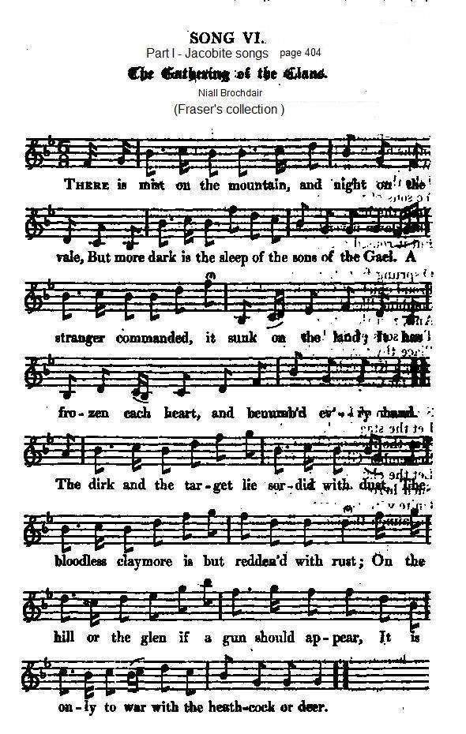

The Gathering of the Clans
Le rassemblement des clans
or "Flora McIvor's song" by Sir Walter Scott
Tune- Mélodie"Niall Brochdair" or "Glengarry's Foxhhunter", a Scottish slow air from Captain Simon Fraser's Collection N° 14
and, under the title "The Gathering of the Clans", from Hogg's "Jacobite Relics" 2nd Series Appendix - Part I N°6 , page 404
Sequenced by Christian Souchon

|
To the tune:
"This air, as well as the words, are the genuine composition of Niel Kennedy, fox-hunter to Glengarry, being his adieu to his native country on emigrating to America ."
. Fraser (The Airs and Melodies Peculiar to the Highlands of Scotland and the Isles), 1874; No. 14, pg. 5
|
A propos de la mélodie:
"Cette mélodie et les paroles sont une composition de Niel Kennedy, chasseur de renards à Glengarry, par lesquelles il dit adieu à sa patrie au moment d' émigrer vers l'Amérique ."
. Fraser (Les Airs et Mélodies propres aux Hautes Terres et aux Iles d'Ecosse), 1874; No. 14, pg. 5.
|

|
THE GATHERING OF THE CLANS
"By the author of Waverley" [1] 1. There is mist on the mountain and vale, But more dark is the sleep of the sons of the Gael. A stranger commanded, it sunk on the land; It has frozen each heart and benumb'd ev'ry hand. The dirk and the target lie sordid with dust, The bloodless claymore is but redden'd with rust; On the hill or the glen if a gun should appear, It is only to war with the heath-cock or deer. 2. The deeds of our sires if our bards should rehearse, Let a blush or a blow be the meed of their verse; Be mute every string, and be hush'd every tone, That shall bid us remember the fame that is flown. But the dark hours of night and of slumber are past, The morn on our mountains is dawning at last; Glenaladale's peaks are illumed with the rays, And the streams of Glenfinnan leap bright in the blaze. [2] 3. O high-minded Moray!—the exiled—the dear ! [3] In the blush of the dawning the Standard up rear ; Wide, wide on the winds of the north let it fly, Like the sun's latest flash when the tempest is nigh, Ye sons of the strong, when that dawning shall break, Need the harp of the aged remind you to wake? : That dawn never beamed on your forefathers' eye, But it roused each high chieftain to vanquish or die. 4. O sprung from the kings who in Islay kept state, Proud chiefs of Clan-Ranald, Glengarry, and Sleat, Combine like three streams from one mountain of snow, And, resistless in union, rush down on the foe. [4] True sons of Sir Evan, undaunted Lochiel, Place thy targe on thy shoulder and burnish thy steel! [5] Rough Keppoch, give breath to thy bugle's bold swell, Till far Coryarrick resound to the knell. [6] 5. Stern son of Lord Kenneth, high chief of Kintail, [7] Let the stag in thy standard bound wild in the gale. May the race of Clan-Gillean, the fearless and free, Remember Glenlivat, Harlaw, and Dundee. Let the clan of gray Fingon, whose offspring has given [8] Such heroes to earth, and such martyrs to heaven, Unite with the race of renowned Rorri More, [9] To launch the long galley, and stretch to the oar. 6. How Mac-Shimei will joy when their chief shall display The yew-crested bonnet o'er tresses of gray ! [10] How the race of wronged Alpine [11] and murdered Glencoe [12] Shall shout for revenge when they pour on the foe! Ye sons of brown Dermid, who slew the wild boar, Resume the pure faith of the great Callain-More! [13] Mac-Neill of the Islands, [14] and Moy of the Lake,[15] For honour, for freedom, for vengeance awake. 7. Awake on your hills, on your islands awake, Brave sons of the mountain, the frith, and the lake! 'Tis the bugle — but not for the chace is the call ; 'Tis the pibroch's shrill summons — but not to the hall. 'Tis the summons of heroes for conquest or death, When the banners are blazing on mountain and heath ; They call to the dirk, the claymore, and the targe, To the march and the muster, the line and the charge. 8. Be the brand of each chieftain like Fin's in his ire ! [16] May the blood through his veins flow like currents of fire ! Burst the base foreign yoke, as your sires did of yore, Or die like your sires, and endure it no more. Awake on your hills, on your islands awake, Brave sons of the mountain, the frith, and the lake ! 'Tis the bugle — but not for the chace is the call ; 'Tis the pibroch's shrill summons — but not to the hall. |
LE RASSEMBLEMENT DES CLANS
"par l'auteur de Waverley" [1] 1. La brume impénétrable envahit monts et plaines. Mais le sommeil des Gaëls est plus obscur encor Qu'un étranger fit s'abattre sur leurs domaines: Il entrave les bras, décourage l'effort. Le targe, le poignard, de poussière se couvrent; La rouille empourpre le claymore, non le sang. Quand sur le mont, le glen, on fait parler la poudre, C'est au chevreuil ou bien au faisan qu'on s'en prend. 2. Si quelque barde dit les prouesses anciennes, Rouge au front et soupirs récompensent son chant. Que la harpe se taise et les bouches s'abstiennent De peur qu'il nous souvienne, amis, des jours d'antan! Mais le moment n'est plus à la nuit, plus au songe: L'aube sur la montagne au loin paraît enfin. De son rayonnement Glenaladale s'inonde, Tandis que scintillent les rus de Glenfinnan. [2] 3. Cher et noble Murray, l'exilé, viens et dresse [3] Face à la rouge aurore, et bien haut, l'étendard; Et que le vent du nord l'étale et le caresse, Comme avant l'ouragan luit un soleil blafard. Et vous, les fils des forts, quand poindra cette aurore, Faut-il, pour votre éveil, la harpe des aînés? Cette aube n'a point lui sur les yeux de vos pères, Mais, pour vaincre ou mourir, vos chefs se sont dressés. 4. Vous, rejetons de rois dont l'Islay fut le siège, Les chefs de Clan-Ranald, de Glengarry, de Sleat, Mêlez vos eaux, torrents issus des mêmes neiges: Qui peut vous résister, quand vous êtes unis? [4] Et toi, le fils d'Ewen: toi, Lochiel l'intrépide, Le targe sur l'épaule, aiguise ton claymore! [5] Toi, Keppoch, fais sonner ton clairon, impavide, Qu'à Coryarrick, au loin, sa plainte sonne encore! [6] 5. Sombre fils de Kenneth, de Kintail chef si brave, [7] Que bondisse le cerf dont s'orne ton drapeau! La race de Gilleon ne souffre point l'entrave: Souviens-toi de Dundee, Glenlivet et Harlaw! Que le clan de Fingon dont gisent sous la terre [8] Tant de pieux martyrs, tant d'héroïques morts, Saisisse l'aviron et vogue la galère Où tous rament unis aux fils de Rory Mor! [9] 6. Réjouissez-vous, Fraser, car McShimie l'arbore, Sur ses cheveux blanchis, le bonnet orné d'if. [10] Alpine et son roi mort, [11] Glencoe que l'on déplore [12] Crient "vengeance!", accourant, sus à leurs ennemis! Vous, fils du brun Dermid, vainqueur du Porc sauvage, Soyez inspirés par la foi de Colin Mor! [13] Clan McNeil de Barra, [14] Clan Chattan du Rivage, [15] Entendez l'appel de la vengeance et l'honneur. 7. Debout les montagnards! Debout les clans des îles! Courageux fils des monts, des lacs et des enclos! Le cor n'appelle pas à la chasse futile; Le pibroch ne convoque pas des commensaux. Les héros qu'on appelle ont à périr ou vaincre, Sitôt que l'étendard sur les monts flottera; Saisissez claymores et dirks! Venez sans crainte, Vous rassembler, marcher, charger d'un même pas! 8. Le glaive de ton chef, ce Fingal en colère, [16] C'est toi-même! Et qu'en toi coule un torrent de feu! Brisons de l'étranger le joug, comme naguère Nos pères, ou soyons fiers de mourir comme eux. Debout les montagnards! Debout les clans des îles! Courageux fils des monts, des lacs et des enclos! Le cor n'appelle pas à la chasse futile; Le pibroch ne convoque pas des commensaux. (Trad. Christian Souchon(c)2010) |
LE CHANT DE FLORA McIVOR
Traduction d'Auguste Defauconpret (parue en 1830-1832) 1. Par de noires vapeurs nos monts sont obscurcis; Mais le sommeil du Gaël est bien plus sombre encore. L'étranger l'a vaincu... Son joug le déshonore... Tous les cœurs sont glacés, tous les bras sont flétris. La targe et le poignard sont rongés par la rouille. Des claymores jadis le sang rougit l'acier... Hélas! C'est la poussière aujourd'hui qui les souille; Nos armes ne sont plus funestes qu'au gibier. 2. Bardes de nos aïeux ne chantez plus la gloire; Ce serait offenser leurs fils dégénérés; Bardes, restez muets... par des chants de victoire Vous feriez trop rougir leurs fronts déshonorés. Mais bientôt sur nos monts reparaîtra l'aurore. Déjà sur Glenala luit un rayon plus doux. Voyez, de Glenfinnan le fleuve se colore, La nuit et le sommeil sont enfin loin de nous. 3. Noble et vaillant Moray, venez, qui vous arrête? Déployez l'étendard qui guidait nos aïeux; Qu'il brille sur nos clans tel qu'avant la tempête Brille un dernier rayon du monarque des cieux. Fils des forts, quand pour vous cette clarté va luire, Attendrez-vous encor l'hymne de nos vieillards? Ce signal suffisait sans les sons de leur lyre, Quand de nos vieux guerriers il frappait les regards. 4. Unissez vos vassaux sous les mêmes bannières, Petits-fils de ces rois dans l'Islay tout-puissant; Tels que les flots mêlés de trois fougueux torrents, Renversez l'ennemi, renversez ses barrières. Vrai fils de sir Evan, Lochiel indompté, Prend ta targe, et polis l'acier de ton claymore; Et toi, fais retentir au loin ton cor sonore... Keppoch, rappelle toi ton père redouté. 5. [17] Descendants de Fingon, dont la race guerrière Fut féconde en martyrs aussi bien qu'en soldats, Vous, fils de Rorri-More, arborez sur vos mâts, L'espoir de nos marins, votre illustre bannière. 6. Mac-Shimey vous avez une injure à venger, Alpine fut trahi... Tout son sang fume encore. Enfants du brun Dermid, amoureux du danger, Soyez dignes toujours du noble Callum-More. 7. Habitants de nos monts, habitants de nos îles, Vous ne serez point sourds à la voix de l'honneur. Ce cor n'appelle pas dans les bois le chasseur Pour percer de ses traits les flancs des daims agiles. Non, ce signal s'adresse eux enfants des héros; A nos jeux sans périls nous reviendrons encore; Parez-vous de la targe et prenez la claymore. Il nous faut conquérir la gloire et le repos. 8. Que l'épée en vos mains soit terrible et mortelle. Frappez les oppresseurs, brisez leur joug fatal; Imitez vos aïeux, compagnons de Fingal, Ou mourant, prenez part à leur gloire éternelle. [17] J'ignore si les lacunes et les variations de sens qu'on trouve dans ce texte par rapport à celui noté par Hogg se retrouvent dans l'original anglais de W.Scott ou si elles sont le fait du traducteur Defauconpret. |
|
[1] Namely, Sir Walter Scott (1771 -1832)
This poem, also kown as Flora McIvor's song, clearly inspired by Alexander McDonald's "Song of the Gaelic clans" , is to be found in chapter XXII of a "Waverley", a novel published in 1814 without author's name. It relates how the Englishman Edward Waverley first sympathetic to Jacobitism becomes involved in the 1745 events but chooses eventually Hanoverian respectability. Over the next five years several novels followed, all of them with a Scottish historical background and published under the name (also used here by Hogg) " Author of Waverley ..." [2] Glenaladale, Glenfinnan : the places where Prince Charles's venture started. [3] William Murray of Atholl , the attainted Marquis of Tullibardine unfurled Prince Charles' Standard in Glenfinnan in 1745. [4] Clan Donald whose common ancestor, Donald was "King of the Isles" (Kintyre and Islay) and the three related main McDonald clans. [5] Sir Ewen Cameron of Lochiel and his grandson, Donald, the Gentle Lochiel who followed Prince Charles and died in France in 1748. [6] McDonald of Keppoch : also a McDonal clan whose 17th chief, Alexander, declared at once for Prince Charles in 1745. He fell at Culloden. [7] Kenneth Mor, traditionally descended from Gilleon of the Aird was the first chief on record of Clan McKenzie whose crest displays a "Caberfeidh" (stag antlers). One of his successors was created Lord of Kintail in 1609. Harlaw (1411), Glenlivet (1594) and Dundee (1651) are clan battles or battles between Gaels and Lowlanders. This clan fought, in fact, with the Hanoverian forces in the '45. [8] McFingon is the former form of the clan surname now known as McKinnon . The clan fought with Prince Charles at Culloden. Their old chief was taken and died in 1756 after a long emprisonment. [9] Sir Rory Mor, 16th chief of Clan McLeod of McLeod settled a longlasting feud with the McDonalds, to which the galley alludes (the Galley of ClanRanald is a famous poem by Alexander McDonald). [10] The Chiefs of Clan Fraser of Lovat bear the patronymic Mac Shimie (son of Simon) after Sir Simon, the youngest brother of Sir Alexander Fraser, the Chamberlain. His far descendant, Simon, 11th Lord Lovat, the "Fox" was involved in the 1745 , attainted and executed after Culloden. His peerage was revived in 1837 (after Walter Scott's death). The Clan's badge was Yew. [11] After the battle of Glenruin in 1603 the name McGregor , one of the clans claiming descent from King Kenneth McAlpine, was proscribed and the annihilation of the whole clan aimed at. [12] The McDonalds of Glencoe who had fought at Killiekrankie delayed swearing alliegeance to King William and were traitourously slaughtered by the Campbells enlisted by him to that end (1692). [13] The Campbells of Argyll consider Diarmid o Duinne, "slayer of the great Boar of Caledon", as the founder of their clan. He was said to have had an arched mouth (caim beul) which is traditionally considered the meaning of the clan's name. Duinne (or donn) translates as "brown, brown-haired". The chief of the clan gets his patronymic of "Mac Cailein Mor" (descendant of Colin the Great) from Cailean Mor (Sir Colin Campbell) who fought with the Bruce in the wars of Scottish Independence and was slain by his enemies, the McDougalls at the Red Ford in Lorne in 1294. Most of the clansmen fought with the Hanoverian Forces in the 1745 as their chief supported the government. [14] Roderick, 39th chief of Clan McNeil of Barra was imprisoned for his share in the 1745. [15] Moy Hall in Invernesshire was the residence of Angus, 22nd chief of Clan McKintosh and clan Chattan who gave a half-hearted support to the Hanoverians in the '45, while his wife and the clan took the field for Prince Charles. [16] Finn or Fingal (Find Mac Cumhaill) is the chief hero in the epics called the Poems of Ossian written by James McPherson. He was king of the Leinster Fenians and resided at Almhain, in the county of Kildare. His betrothed Grainné eloped with Diarmid o' Duinne and their pursuit by Fin is the subject of one of the most important of the Irish Fenian tales. |
[1] A savoir: Walter Scott (1771 - 1832)
Ce poème, parfois appelé "Chant de Flora McIvor" - et sans aucun doute inspiré par le "Chant des Clans des Highlands" d'Alexandre McDonald -, figure au chapitre XXII de "Waverley", roman paru en 1814 sans nom d'auteur. Il raconte comment l'Anglais Waverley, tout d'abord sympathisant des Jacobites est entraîné dans les événements de 1745, mais choisit, en fin de compte, de revenir à la respectabilité hanovrienne. Au cours des 5 années qui suivirent, plusieurs romans suivirent dont l'intrigue avait pour décor l'Ecosse historique et l'auteur désigné par la formule (utilisée par Hogg en l'occurrence) " l'auteur de Waverley" ... [2] Glenaladale, Glenfinnan : les endroits où débutèrent les aventures du Prince Charles. [3] William Murray d'Atholl , le Marquis of Tullibardine, déchu de ses droits, déploya l'étendard du Prince Charles à Glenfinnan en 1745. [4] Le Clan Donald dont l'ancêtre éponyme, Donald, était "Roi des Îles" (Kintyre et Islay) et les trois branches principales dudit clan McDonald. [5] Sir Ewen Cameron de Lochiel et son petit-fils, Donald, le Gentilhomme Lochiel qui suivit le Prince Charles et mourut en France en 1748. [6] McDonald de Keppoch : également un clan McDonal dont le 17ème chef, Alexandre, prit d'emblée le parti du Prince Charles en 1745. Il fut tué à Culloden. [7] Kenneth Mor, dont la tradition veut qu'il soit un descendant de Gilleon de l'Aird fut le premier chef à figurer dans les annales du Clan McKenzie dont l'insigne figure les ramures d'un cerf ("Caberfeidh"). L'un de ses successeurs devint seigneur de Kintail en 1609. Harlaw (1411), Glenlivet (1594) et Dundee (1651) sont des batailles entre clans ou entre Gaëls et Lowlanders. En réalité ce clan se rangea du côté des Hanovriens en 1745. [8] McFingon est la forme ancienne du nom du clan que l'on appelle aujourd'hui McKinnon . Le clan combattit avec le Prince Charles à Culloden. Le vieux chef du clan fut arrêté et mourut en 1756 après un long emprisonnement. [9] Sir Rory Mor, 16ème chef du Clan McLeod de McLeod mit fin à un long différend l'opposant aux McDonald, un clan auquel la galère fait allusion (la Galère de ClanRanald est un poème fameux d'Alexandre McDonald). [10] Les chefs du Clan Fraser de Lovat ont comme patronyme "Mac Shimie" (descendant de Simon) d'après Sir Simon, le frère cadet de Sir Alexandre Fraser, le Chambellan. Son lointain successeur, Simon, 11tème Lord Lovat, surnommé "le Renard", se trouva entraîné dans la rébellion de 1745, déchû de ses droits et exécuté après Culloden. Son titre de noblesse fut rétabli en 1837 (après la mort de Walter Scott). L'insigne du Clan était une feuille d'If. [11] Après la bataille de Glenruin en 1603 le nom de McGregor , l'un des clans revendiquant comme ancêtre le roi Kenneth McAlpine, fut prohibé et l'anéantissement du clan envisagé. [12] Les McDonald de Glencoe qui avaient combattu à Killiekrankie avaient tardé à prêter serment d'allégeance au roi Guillaume et furent massacrés traitreusement par des Campbell engagés par lui à cet effet (1692). [13] Les Campbell d'Argyll considèrent Diarmid o Duinne, "tueur du grand sanglier de Calédonie", comme le fondateur de leur clan. On prétend qu'il avait la bouche "tordue" (caim beul) et la tradition veut que ce soit là l'origine du nom du clan. Duinne (ou donn) se traduit par "brun, châtain". Le chef du clan tient son patronyme, "Mac Cailein Mor" (descendant de Colin le Grand) de Cailean Mor (Sir Colin Campbell), compagnon d'armes de Bruce au cours des guerres d'indépendance écossaises, qui fut tué par ses ennemis, les McDougall au Gué Rouge à Lorne en 1294. La plupart des hommes du clan combattirent dans les troupes hanovriennes en 1745, leur chef étant toujours du côté du gouvernement. [14] Roderick, 39th chef du Clan McNeil de Barra fut emprisonné pour avoir pris part à le rébellion de 1745. [15] Moy Hall près d'Inverness était la résidence d'Angus, 22ème chef du Clan McKintosh et chef du clan Chattan qui apporta un soutien mitigé aux Hanovriens en 1745, tandis que son épouse et son clan se mirent en campagne pour le Prince Charles. [16] Finn ou Fingal (Find Mac Cumhaill) est le principal héros de l'épopée intitulée les Poèmes d'Ossian composée par James McPherson. Finn était le roi des Fenians de Leinster et résidait à Almhain, dans l'actuel comté de Kildare. Sa fiancée Grainné s'enfuit avec Diarmid o' Duinne et leur poursuite par Finn est le thème d'un des plus fameux récits du cycle irlandais des Fenians. |
|
des chants étudiés dans ELF JAKOBITENLIEDER IN GÄLISCHER SPRACHE un essai en allemand au format LIVRE DE POCHE 
de Christian Souchon |
zu der Abhandlung ELF JAKOBITENLIEDER IN GÄLISCHER SPRACHE einem deutschsprachigen TASCHENBUCH
von Christian Souchon |
is one of the songs studied in ELF JAKOBITENLIEDER IN GÄLISCHER SPRACHE presented in German as a PAPERBACK BOOK
by Christian Souchon |
Cliquer sur le lien ou l'image - Klicke auf den Link oder auf das Bild - Click link or picture for more info